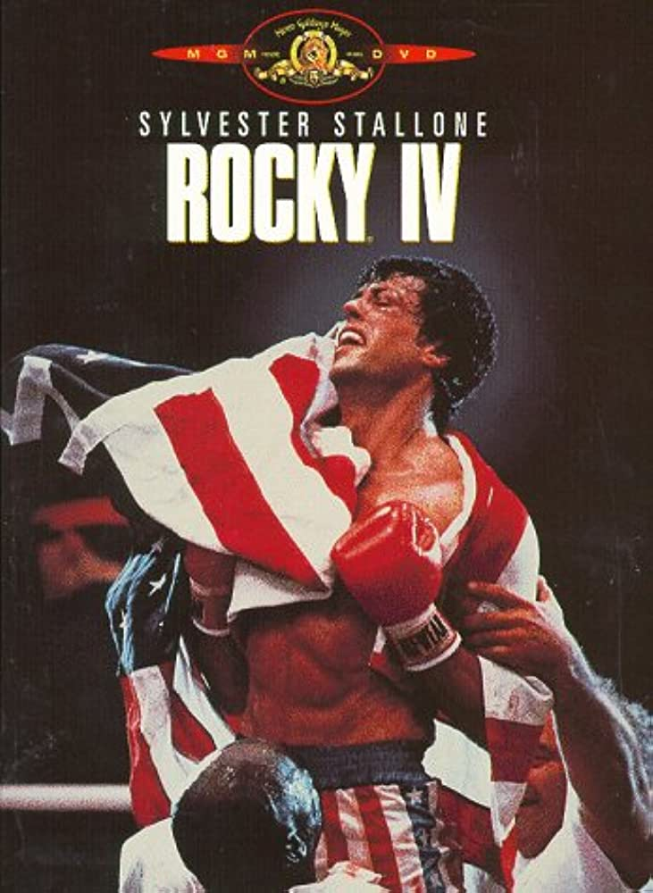

Evans Top 4 Movies
1. The Hangover

The Hangover is the best movie of all time. In this movie, there are 4
main characters named Doug, Alan, Stu, and Phil. They all go to Vegas
for Doug's bachelor party the day before his wedding. They party a bit
too hard and Doug ends up going missing and they have to trace their
steps back from the night before to find him and get him to his wedding.
Click
here
to watch the movie trailer
2. Avengers Infinity War

Iron Man, Thor, the Hulk and the rest of the Avengers unite to battle
their most powerful enemy yet -- the evil Thanos. On a mission to
collect all six Infinity Stones, Thanos plans to use the artifacts to
inflict his twisted will on reality. The fate of the planet and
existence itself has never been more uncertain as everything the
Avengers have fought for has led up to this moment.
Click
here
to watch the movie trailer
3. Spider-Man No Way Home

With Spider-Man's identity now revealed, our friendly neighborhood
web-slinger is unmasked and no longer able to separate his normal life
as Peter Parker from the high stakes of being a superhero. When Peter
asks for help from Doctor Strange, the stakes become even more
dangerous, forcing him to discover what it truly means to be Spider-Man.
Click
here
to watch the movie trailer
4. Rocky 4

After reclaiming the boxing championship title, Rocky Balboa plans to
retire and live with his wife, Adrian. However, during an exhibition
match, Rocky's friend Apollo Creed is mercilessly beaten to death by
hulking Russian newcomer Ivan Drago. Rocky vows payback against Drago
and flies to Russia to train for a Christmas Day fight. Despite their
different training methods, Rocky and Drago both wage a long and intense
match.
Click
here
to watch the movie trailer